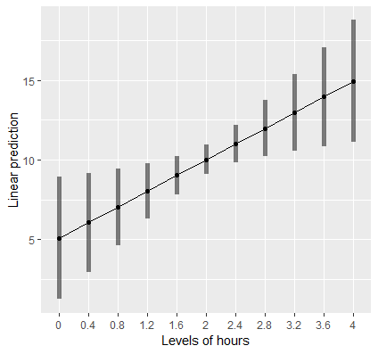
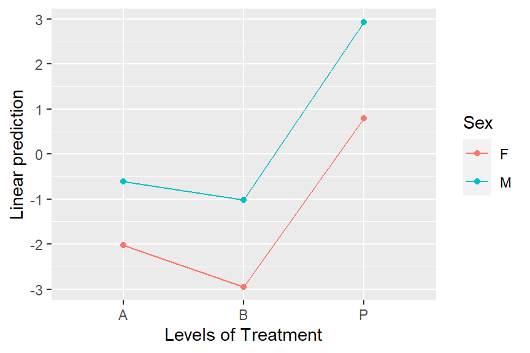
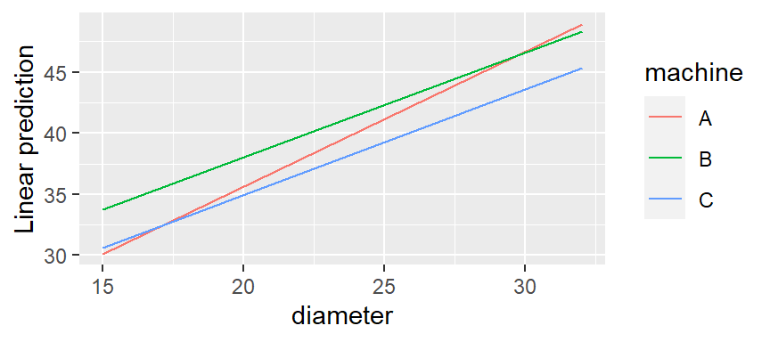

emmeans
Equally Weighted Marginal Means
- emmeans - Estimated outcome means (i.e. predictions) by category based on if you had balanced categorical features
- emtrends - Estimated slopes
- Example: Simple Linear Regression
Prediction for when hours = 2
cont <- lm(loss ~ hours, data = dat) emmeans(cont, ~ hours, at = list(hours = 2) #> hours emmean SE df lower.CL upper.CL #> 2 10 0.469 898 9.1 10.9 #> Confidence level used: 0.95- The prediction is emmean = 10 (rounded)
For interaction models (e.g. loss ~ hours * effort)
(mylist <- list(hours = 2, effort = 30)) emmeans(contcont, ~ hours * effort, at = mylist) #> hours effort emmean SE df lower.CL upper.CL #> 2 30 10.2 0.453 896 9.35 11.1 #> Confidence level used: 0.95- Notice ~ hours * effort is used for the formula which includes the main effects for
lmmodels
- Notice ~ hours * effort is used for the formula which includes the main effects for
Slope of hours
emtrends(cont, ~ 1, var="hours") #> 1 hours.trend SE df lower.CL upper.CL #> overall 2.47 0.948 898 0.609 4.33 #> Confidence level used: 0.95- The ~ 1 tells the function to obtain the overall slope and var = “hours” tells the function that we want the slope for hours.
Plot the slope
mylist <- list(hours=seq(0,4,by=0.4)) emmip(cont, ~ hours, at = mylist, CIs = TRUE)- mylist is vector of reasonable values for the hours explanatory variable
{kind=link}
Explainer
An unbalanced experiment where pigs are given different percentages of protein (percent) from different sources (source) in their diet, and later we measure the concentration (conc) of leucine.
pigs %>% filter(percent == 18) %>% summarize(avg_conc = mean(log(conc))) #> avg_conc #> 3.65515- This is the mean concentration leucine for all instances of 18 percent protein
- The problem with this estimate of the mean is that the experiment (i.e. groups) are unbalanced and the cell counts affect the mean calculation.
The aggregated conc values per category are actually weighted by the cell counts
with(pigs, table(source, percent)) ## percent ## source 9 12 15 18 ## fish 2 3 2 3 ## soy 3 3 3 1 ## skim 3 3 2 1Whether we want the unbalanced or balanced version of the mean depends on the situation
Example
- Data: sales of a product given different packaging and features
- The data is observed, so it’s most likely unbalanced.
- Inferential question: Which categories of packaging and features are inherently more profitable?
- We’d like the categories to be balanced to get an unbiased analysis of how each category or combination of categories affects sales. Therefore, equally weighted EMMs may be appropriate.
- Prediction Question: How much variation between packaging categories and sales? The more variation, more predictive.
- Maybe there’s a reason for the imbalance and having the imbalance gives us a representative sample of the true population.
- The (unequally) weighted EMMs will provide better estimates of what we can expect in the marketplace
- Data: sales of a product given different packaging and features
emmeans gives an equally weighted estimation of the mean
pigs_fit <- lm(log(conc) ~ factor(percent) + source, data = pigs) emmeans(pigs_fit, "percent") ## percent emmean SE df lower.CL upper.CL ## 9 3.45 0.0409 23 3.36 3.53 ## 12 3.62 0.0384 23 3.55 3.70 ## 15 3.66 0.0437 23 3.57 3.75 ## 18 3.75 0.0530 23 3.64 3.85 ## ## Results are averaged over the levels of: source ## Results are given on the log (not the response) scale. ## Confidence level used: 0.95- Unequally Weighted Mean is 3.66
- Equally Weighted Mean is 3.75
emmeans are also dependent on the specification of the model
pigs_fit <- lm(log(conc) ~ factor(percent) + source, data = pigs) emmeans(pigs_fit, "source") #> source emmean SE df lower.CL upper.CL #> fish 3.39 0.0367 23 3.32 3.47 #> soy 3.67 0.0374 23 3.59 3.74 #> skim 3.80 0.0394 23 3.72 3.88 pigs_fit2 <- lm(log(conc) ~ percent + source, data = pigs) emmeans(pigs_fit2, "source") #> source emmean SE df lower.CL upper.CL #> fish 3.38 0.0373 25 3.30 3.46 #> soy 3.65 0.0369 25 3.58 3.73 #> skim 3.78 0.0390 25 3.70 3.86
Interactions
Notes from Getting started with emmeans
Misc
- With interaction terms, main effects aren’t usually what’s interpreted
- You can get main effects response mean estimates from a model with interactions but the standard errors/CIs will be different than a model w/o an interaction
- With interaction terms, main effects aren’t usually what’s interpreted
Example: Categorical:Categorical
str(dat) # 'data.frame': 20 obs. of 3 variables: # $ f1 : Factor w/ 2 levels "a","c": 1 1 1 1 1 1 1 1 1 1 ... # $ f2 : Factor w/ 2 levels "m","n": 1 2 1 2 1 2 1 2 1 2 ... # $ resp: num 1.6 0.3 3 0.1 3.2 0.2 0.4 0.4 2.8 0.7 ... fit1 = lm(log(resp) ~ f1 + f2 + f1:f2, data = dat)- Note that since the log transformation is specified in the model formula and not in a preprocessing step, emmeans can detect it.
Pairwise Contrasts
Each category-level interaction response mean estimate is differenced with each of the other category-level interaction estimates
emm1 <- emmeans(fit1, specs = pairwise ~ f1:f2) emm1$contrasts # contrast estimate SE df t.ratio p.value # a m - c m 0.671 0.629 16 1.065 0.7146 # a m - a n 1.847 0.629 16 2.934 0.0434 # a m - c n -0.766 0.629 16 -1.217 0.6253 # c m - a n 1.176 0.629 16 1.869 0.2795 # c m - c n -1.437 0.629 16 -2.283 0.1438 # a n - c n -2.613 0.629 16 -4.152 0.0038 # Results are given on the log (not the response) scale. # P value adjustment: tukey method for comparing a family of 4 estimatesFor response mean estimates on the the response scale (e.g. backtransforming log(resp) in the model)
emm1.1 <- emmeans(fit1, specs = pairwise ~ f1:f2, type = "response") emm1.1$contrasts # $contrasts # contrast ratio SE df t.ratio p.value # a m / c m 1.9553 1.2306 16 1.065 0.7146 # a m / a n 6.3396 3.9900 16 2.934 0.0434 # a m / c n 0.4648 0.2926 16 -1.217 0.6253 # c m / a n 3.2422 2.0406 16 1.869 0.2795 # c m / c n 0.2377 0.1496 16 -2.283 0.1438 # a n / c n 0.0733 0.0461 16 -4.152 0.0038 # P value adjustment: tukey method for comparing a family of 4 estimates # Tests are performed on the log scale- Comparisons have changed from additive comparisons (via subtraction) to multiplicative comparisons (via division).
With Confidence Intervals
emm1.1 %>% confint() # contrast ratio SE df lower.CL upper.CL # a m / c m 1.9553 1.2306 16 0.5150 7.424 # a m / a n 6.3396 3.9900 16 1.6696 24.072 # a m / c n 0.4648 0.2926 16 0.1224 1.765 # c m / a n 3.2422 2.0406 16 0.8539 12.311 # c m / c n 0.2377 0.1496 16 0.0626 0.903 # a n / c n 0.0733 0.0461 16 0.0193 0.278 # Confidence level used: 0.95 # Intervals are back-transformed from the log scale emm1.1$contrasts %>% summary(infer = TRUE) # contrast ratio SE df lower.CL upper.CL t.ratio p.value # a m / c m 1.9553 1.2306 16 0.5150 7.424 1.065 0.3025 # a m / a n 6.3396 3.9900 16 1.6696 24.072 2.934 0.0097 # a m / c n 0.4648 0.2926 16 0.1224 1.765 -1.217 0.2412 # c m / a n 3.2422 2.0406 16 0.8539 12.311 1.869 0.0801 # c m / c n 0.2377 0.1496 16 0.0626 0.903 -2.283 0.0365 # a n / c n 0.0733 0.0461 16 0.0193 0.278 -4.152 0.0008 # Confidence level used: 0.95 # Intervals are back-transformed from the log scale # Tests are performed on the log scaleWithin group comparisons
emm2 <- emmeans(fit1, specs = pairwise ~ f1|f2, type = "response") emm2 # $emmeans # f2 = m: # f1 response SE df lower.CL upper.CL # a 1.767 0.786 16 0.688 4.538 # c 0.903 0.402 16 0.352 2.321 # f2 = n: # f1 response SE df lower.CL upper.CL # a 0.279 0.124 16 0.108 0.716 # c 3.800 1.691 16 1.479 9.763 # Confidence level used: 0.95 # Intervals are back-transformed from the log scale # $contrasts # f2 = m: # contrast ratio SE df t.ratio p.value # a / c 1.9553 1.2306 16 1.065 0.3025 # f2 = n: # contrast ratio SE df t.ratio p.value # a / c 0.0733 0.0461 16 -4.152 0.0008 # Tests are performed on the log scale- The f1|f2 syntax translates to “compare levels of f1 within each level of f2”
- This is just a subset of the complete pairwise contrasts
- e.g. The f2 = m section is the same as am-cm
Logistic Regression
Data and Models
str(neuralgia) #> 'data.frame': 60 obs. of 5 variables: #> $ Treatment: Factor w/ 3 levels "A","B","P": 3 2 3 3 2 2 2 1 2 1 ... #> $ Sex : Factor w/ 2 levels "F","M": 1 2 1 2 2 1 1 1 1 2 ... #> $ Age : int 68 74 67 66 70 67 77 71 72 65 ... #> $ Duration : int 1 16 30 26 22 28 16 12 50 15 ... #> $ Pain : Factor w/ 2 levels "No","Yes": 1 1 1 2 1 1 1 1 1 1 ... # interaction neuralgia.glm <- glm(Pain ~ Treatment * Sex + Age, family = binomial, data = neuralgia) # only main effects neuralgia.glm2 <- glm(Pain ~ Treatment + Sex + Age, family = binomial(), data = neuralgia)- Treatments A and B with Placebo, P.
Main Effects (No Interaction)
neuralgia.emm2 <- emmeans(neuralgia.glm2, "Treatment", type = "response") neuralgia.emm2 # Treatment prob SE df asymp.LCL asymp.UCL # A 0.198 0.1056 Inf 0.0630 0.476 # B 0.125 0.0814 Inf 0.0322 0.381 # P 0.856 0.0842 Inf 0.6092 0.958 # Results are averaged over the levels of: Sex # Confidence level used: 0.95 # Intervals are back-transformed from the logit scalePairwise Contrasts
Main Effect Contrast (No Interaction)
emm2_prob <- emmeans(neuralgia.glm2, "Treatment", type = "response") %>% regrid() %>% contrast(method = "revpairwise") # contrast estimate SE df z.ratio p.value # B - A -0.0731 0.125 Inf -0.586 0.8276 # P - A 0.6577 0.143 Inf 4.584 <.0001 # P - B 0.7308 0.132 Inf 5.554 <.0001 confint(emm2_prob) # contrast estimate SE df asymp.LCL asymp.UCL # B - A -0.0731 0.125 Inf -0.366 0.219 # P - A 0.6577 0.143 Inf 0.321 0.994 # P - B 0.7308 0.132 Inf 0.422 1.039 # Results are averaged over the levels of: Sex # Confidence level used: 0.95 # Conf-level adjustment: tukey method for comparing a family of 3 estimates- The means and contrasts are on the probability scale with CIs
regridback-transforms all the results to a new set of EMMs as if there had never been a transformation
Main Effect Contrast (Interaction)
neuralgia.emm2 <- emmeans(neuralgia.glm, "Treatment", type = "response") # Treatment prob SE df asymp.LCL asymp.UCL # A 0.211 0.1109 Inf 0.0675 0.497 # B 0.121 0.0835 Inf 0.0285 0.391 # P 0.866 0.0883 Inf 0.5927 0.966 # Results are averaged over the levels of: Sex # Confidence level used: 0.95 # Intervals are back-transformed from the logit scale pairs(neuralgia.emm, reverse = TRUE) # contrast odds.ratio SE df z.ratio p.value # B / A 0.513 0.515 Inf -0.665 0.7837 # P / A 24.234 25.142 Inf 3.073 0.0060 # P / B 47.213 57.242 Inf 3.179 0.0042 # Results are averaged over the levels of: Sex # P value adjustment: tukey method for comparing a family of 3 estimates # Tests are performed on the log odds ratio scale- The means are on the probability scale but the contrasts are odds ratios
- Interpretation (odds ratios)
- So there is evidence of considerably more pain being reported with placebo (Treatment P) than with either of the other two treatments. The estimated odds of pain with B are about half that for A, but this finding is not statistically significant.
- This model produces a warning after emmeans is executed
- If two factors interact, it may be the case that marginal averages of predictions (i.e. probs in the main effects summary) don’t reflect what is happening at any level of the factors being averaged over.
- To find out, look at an interaction plot of the fitted model using
emmip(neuralgia.glm, Sex ~ Treatment)
- There is no practical difference between females and males in the patterns of response to Treatment, so the main effects mean response probability estimates are likely reasonable.
- e.g. If Treatment B was lowest in Females but NOT lowest in Males, then using the main effects mean estimates would be misleading.
- There is no practical difference between females and males in the patterns of response to Treatment, so the main effects mean response probability estimates are likely reasonable.
Interaction: Categorical:Categorical
neuralgia.emm1 <- emmeans(neuralgia.glm, pairwise ~ Treatment:Sex, type = "response") neuralgia.emm1 # $emmeans # Treatment Sex prob SE df asymp.LCL asymp.UCL # A F 0.1164 0.1124 Inf 0.0152 0.528 # B F 0.0498 0.0581 Inf 0.0047 0.367 # P F 0.6900 0.1564 Inf 0.3469 0.903 # A M 0.3516 0.1727 Inf 0.1094 0.705 # B M 0.2644 0.1605 Inf 0.0665 0.644 # P M 0.9496 0.0604 Inf 0.6134 0.996 # Confidence level used: 0.95 # Intervals are back-transformed from the logit scale # $contrasts # contrast odds.ratio SE df z.ratio p.value # A F / B F 2.51544 4.10261 Inf 0.566 0.9932 # A F / P F 0.05920 0.07818 Inf -2.141 0.2664 # A F / A M 0.24297 0.32216 Inf -1.067 0.8945 # A F / B M 0.36662 0.49854 Inf -0.738 0.9772 # A F / P M 0.00699 0.01176 Inf -2.951 0.0374 # B F / P F 0.02353 0.03514 Inf -2.511 0.1208 # B F / A M 0.09659 0.13584 Inf -1.662 0.5571 # B F / B M 0.14575 0.20081 Inf -1.398 0.7285 # B F / P M 0.00278 0.00525 Inf -3.113 0.0228 # P F / A M 4.10430 4.40227 Inf 1.316 0.7760 # P F / B M 6.19302 7.15364 Inf 1.579 0.6128 # P F / P M 0.11806 0.16426 Inf -1.536 0.6411 # A M / B M 1.50891 1.64607 Inf 0.377 0.9990 # A M / P M 0.02876 0.04339 Inf -2.353 0.1733 # B M / P M 0.01906 0.03059 Inf -2.468 0.1337 # P value adjustment: tukey method for comparing a family of 6 estimates # Tests are performed on the log odds ratio scale- The means are on the probability scale and the contrasts are odds ratios
Interaction: Continuous:Categorical
We want estimates of slopes of the covariate trend for each level of the categorical variable
Model
fiber.lm <- lm(strength ~ diameter * machine, data = fiber)- diameter is the continuous covariate and machine is a categorical
Compare trends for each factor level
emtrends(fiber.lm, pairwise ~ machine, var = "diameter") ## $emtrends ## machine diameter.trend SE df lower.CL upper.CL ## A 1.104 0.194 9 0.666 1.54 ## B 0.857 0.224 9 0.351 1.36 ## C 0.864 0.208 9 0.394 1.33 ## Confidence level used: 0.95 ## $contrasts ## contrast estimate SE df t.ratio p.value ## A - B 0.24714 0.296 9 0.835 0.6919 ## A - C 0.24008 0.284 9 0.845 0.6863 ## B - C -0.00705 0.306 9 -0.023 0.9997 ## P value adjustment: tukey method for comparing a family of 3 estimates- Contrasts show no significant difference in slopes between categorical levels
Viz
emmip(fiber.lm, machine ~ diameter, cov.reduce = range)rangeis required. It’s a function that gets the min, max values of diameter- Machine A slope looks different, but I guess it’s not different enough.
{kind=link}
{kind=link}
Mixed Effects
{lme4} and {nlme} supported plus others. See “Models” vignette for the complete list of supported models.
Example: From “Sophisticated” vignette
library(lme4) Oats.lmer <- lmer(yield ~ Variety + factor(nitro) + (1|Block/Variety), data = nlme::Oats, subset = -c(1,2,3,5,8,13,21,34,55)) emmeans(Oats.lmer, "nitro", lmer.df = "satterthwaite") ## nitro emmean SE df lower.CL upper.CL ## 0.0 78.9 7.28 7.28 61.8 96 ## 0.2 97.0 7.13 6.72 80.0 114 ## 0.4 114.2 7.13 6.72 97.2 131 ## 0.6 124.1 7.07 6.49 107.1 141 ## ## Results are averaged over the levels of: Variety ## Degrees-of-freedom method: satterthwaite ## Confidence level used: 0.95CIs for emmeans are wider than that of emmeans calculated by {ggeffects}. (no change when I tried different lmer.df args)
- Can’t really figure out why. There is a lmer.df arg that should affect the std.errors and CIs for lmer models.
- default = kenward-roger; Others are asymptotic and satterthwaite (used by {lmerTest})
- Kenward-Roger and Satterthwaite essentially the same except kr makes an additional bias adjust to the vcov matrix. Guessing that makes kr’s CIs wider.
- Asymptotic sets dof to INF which switches from t-stats to z-stats.